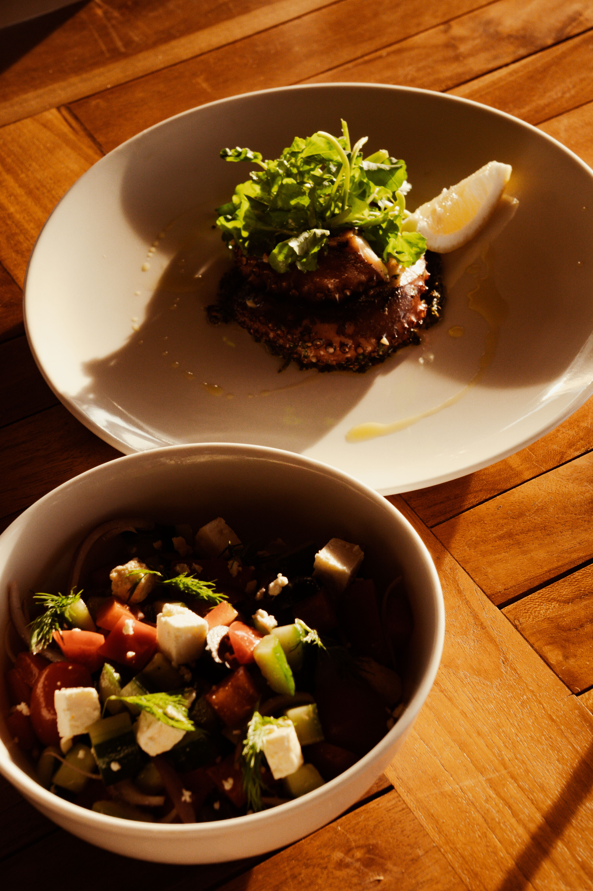

Campus Dining, No Meal Plan Necessary!
Though dining halls are sometimes thought of as the only locations to accept Wiscard, there are many more possibilities on campus! Explore the options and their open hours below
Badger Dining
explore an extensive list of on-campus food options
Use your wiscard dining dollars or stored money
check out the available times for each option listed

Though dining halls are sometimes thought of as the only locations to accept Wiscard, there are many more possibilities on campus! Explore the options and their open hours below
Dine at the UW Madison's dining halls using a meal plan or paying a fee using wiscard
Dining HallsAre there any dining locations that accept wiscard that didn't make this site? Please request to add it here:
Request Additional Dining Location